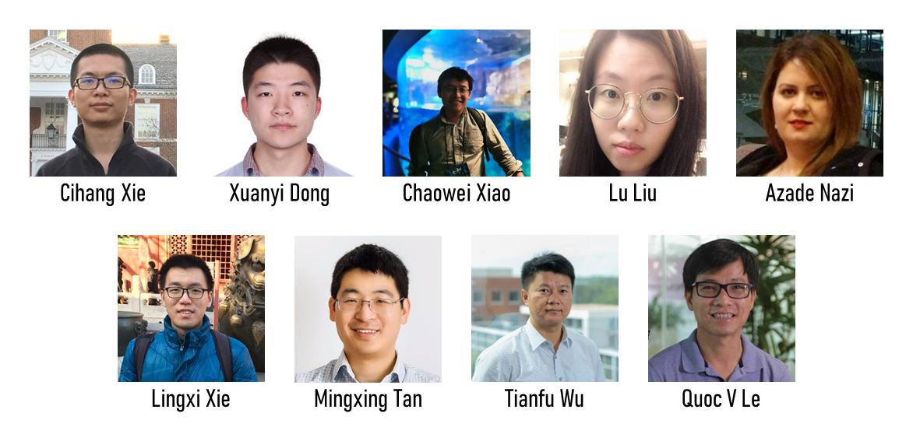

ICCV 2021 Workshop onNeural Architectures: Past, Present and Future |
||
Montreal, Canada |
||

The surge of deep learning has largely benefited from the success of neural architecture design. By evolving from LeNet to AlexNet to VGG and to ResNet, neural architecture keeps incorporating novel designs of architectural elements and network topologies, leading to significant improvements in representation learning. Recently, the emergence of neural architecture search (NAS) further advances the representational capacity of neural networks, by changing the architecture design from the hand-crafted manner to automation. Despite remarkable achievements being made on various benchmark tasks, the development of neural architectures still faces several challenges. On the one hand, current neural architecture designs are not fully automatic yet. For instance, even with NAS, we still require tremendous knowledge from human experts on designing the architecture search space, defining search strategies and selecting training hyperparameters. On the other hand, existing neural architectures are severely exposed to the problems of lacking interpretability, vulnerability to adversarial examples, incapability of abstract reasoning, etc.
In this workshop, we will focus on recent research and future directions on advancing the deep learning system, particularly from the perspective of neural architectures. We aim to bring experts from artificial intelligence, machine learning, deep learning, statistics, computer vision, and cognitive science communities together not only on discussing the current challenges of neural architecture designs, but also on charting out the blueprint of neural architectures for further bridging the gap between the human brain and neural networks.
Topics of interests include, but are not limited to, the following diverse fields:
Please contact Lingxi Xie or Cihang Xie if you have questions. The webpage template is by the courtesy of ICCV 2019 Tutorial on Interpretable Machine Learning for Computer Vision.